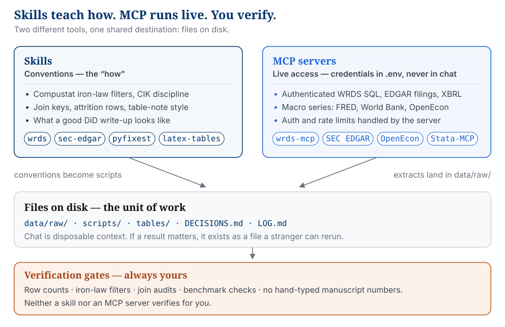
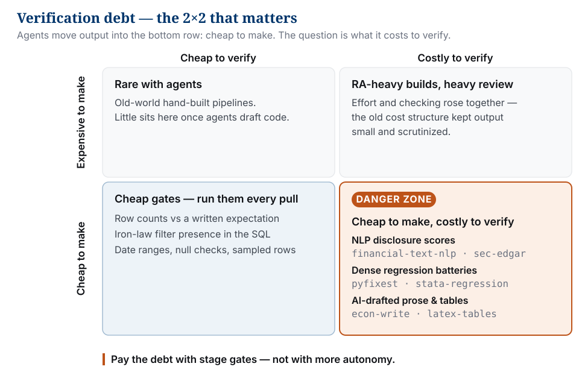

Accounting research pipeline: skills, MCP, and verification
Skills teach how: Compustat filters, CIK discipline, attrition rows, what a defensible DiD write-up looks like. MCP servers run live access: authenticated WRDS queries, EDGAR filings, macro series. Credentials stay in .env, never in chat. Neither replaces verification. Agents make pipelines cheap to produce. The costly part stays on you: joins, filters, construct validity, every number in the manuscript. Files on disk are the unit of work; chat is disposable.
The nine stages of an archival accounting paper, from empty folder to seminar-ready draft. Click a stage node to jump to its card.
If the bottleneck is knowing the convention, use a skill. If the bottleneck is talking to a remote system with secrets or rate limits, use MCP. If both, install both, and keep credentials in env files the MCP reads, never in prompts.

Skills and MCP run in parallel lanes; both end in files on disk that you verify.
Either / both: MCP to discover; skill for pinned reproducible scripts
Stata clean / reghdfe / esttab
stata-data-cleaning, stata-regression
Stata-MCP
Both if the agent drives Stata; skill only if you run .do files yourself
Panel FE in Python
pyfixest, python-panel-data
none
Skill only
Lit search / BibTeX
econ-lit-search, citation-management
none
Skill only
Figures / LaTeX tables
econ-visualization, latex-tables
none
Skill only
Paper / slides / referee prep
econ-write, econ-slides, econ-referee
none
Skill only
“What tool rung am I on?”
—
—
Chat for thinking; editor for edits; agent for pipelines; agent + MCP only when live licensed or public APIs are required
The nine stages
Each stage lists its default skills, the MCP server if one applies, and the verification gate you pass before moving on. Alternatives are collapsed: pick one lane and stay in it. Chip text opens the skill in the catalog; the arrow downloads the zip.
Stage-by-tool map: skills carry every stage; MCP enters at data pull, text, and (optionally) estimation. Chips and badges are clickable.
Filter stages
1
Research question and literature
Question
Sharpen a question that Compustat, CRSP, EDGAR, or a public panel can actually answer; map prior designs and measurement conventions before writing any code.
Name the identifying variation and the unit of observation (firm–year, filing, event) in one sentence. If you cannot, do not open a data session yet.
Use this when…
You are scoping a first paper or a new chapter and need search plus synthesis, not SQL.
Skip when…
The design is already fixed: a referee revision with a locked sample. Jump to stages 2–3.
2
Empty folder and the six-part opening prompt
Question
Start in a clean directory and write the six-part prompt before any code runs. Demand named scripts, DECISIONS.md, LOG.md, and attrition rows, not chat-only results.
MCPNone at prompt-writing time; MCP comes online in stage 3. Install wrds / sec-edgar here so the prompt carries the iron laws and CIK discipline from the start.
Verify this
Paste the six headings. Fill in every blank an agent would have to guess: years, tags, filters, join key, filename.
Use this when…
Starting any new empirical project or lab-style loop.
Skip when…
Extending a repo that already has DECISIONS.md and stage scripts. Prompt for the delta; do not reinvent the folder.
3
Live data pull
Data
Pull WRDS extracts, EDGAR filings and XBRL facts, and macro controls into data/raw/. Every pull, authenticated or bulk, ends as files on disk.
The skill encodes the query patterns and iron laws; the MCP runs them. api-data-fetcher is the reproducible-script path; OpenEcon or FRED MCP is the interactive-discovery path.
Credentials live in .env, never in chat. The MCP server reads WRDS_USERNAME and friends from an env file with chmod 600. If a password ever appears in a prompt or a log, rotate it.
Verify this
Four inspections before trusting any extract: (1) row count vs an expectation written down beforehand, (2) a sample of rows, (3) null check on the analysis columns, (4) date-range min/max. Compustat SQL must include indfmt='INDL', datafmt='STD', popsrc='D', consol='C'. CRSP share-type and exchange filters are manual. Never assume a helper applied them.
Use this when…
You need licensed WRDS tables, live EDGAR/XBRL, or pinned macro series at scale.
Skip when…
Reproducing from a frozen Parquet already on disk. Do not re-query WRDS “for convenience.”
4
Clean, join, attrition panel
Data
Turn raw extracts into an analysis-ready firm–year panel. Join on the correct key: gvkey–fyear, adsh, the CCM link table. Never join on hand-typed tickers. Print attrition at every filter.
One join check: n before, n after, and the reason for every drop. Flag unmatched keys. No silent many-to-many blow-ups.
Use this when…
Building or revising the sample that will enter every table.
Skip when…
The panel is locked and you are only adding an outcome column. Document the append in DECISIONS.md and re-print attrition for that step only.
5
Disclosure and EDGAR text measures (optional branch)
Text
CIK resolution → filing retrieval (cached HTML) → section extraction with fallback patterns → quality report → text feature or NLP score. Construct validity is the accounting contribution; automation is not the finding.
Iron habit: resolve and pin CIKs. Never treat ticker strings as stable firm ids across EDGAR joins.
Verify this
Read the quality report: the failures and the suspiciously short sections, not the headline success rate. Before a text measure enters a main table, run a stratified human audit (~50 filings across measure level, size, and industry) against a written rubric.
Use this when…
The paper’s contribution is disclosure, sentiment, or filing-based measurement.
Skip when…
Pure Compustat/CRSP design with no text. Do not pull EDGAR just because the MCP is installed.
6
Construct measures and sanity EDA
Data · Estimate
Build ratios, treatments, instruments, and controls; winsorize or trim with documented rules; plot distributions and known-event windows before any regression.
Name two checks before looking at the figure: (1) benchmark industries or firms where you hold a strong prior, (2) plausibility around a known shock. Write both into the README.
Use this when…
Any new constructed variable enters the analysis file.
Skip when…
Replicating a locked measure from a prior commit. Re-run the measure script and diff the outputs instead.
7
Estimation and identification
Estimate
Run the main specs and pre-committed robustness: FE OLS, Poisson, IV, DiD including modern estimators, clustering. Prefer high-dimensional FE tools that match accounting panel practice: pyfixest if Python, stata-regression if Stata.
econ-writing-plus belongs to stage 9 for prose, but peek at its identification checklists while designing specs.
Verify this
Check one coefficient or N from the log file against an independent re-run or a hand calculation on a tiny subsample. Confirm FE and cluster choices match DECISIONS.md.
Use this when…
The analysis file and measures are frozen enough to estimate.
Skip when…
Still discovering the sample. Regressions on a moving panel create verification debt; do more stage 4–6 work first.
8
Tables, figures, and the paper trail
Write
Export publication tables and figures from scripts. Every manuscript number comes from a generated file, \input{} or a read CSV, never hand-typed from a terminal. Finish the README so a stranger can rerun the project from empty folder to figure.
Pick one table cell. Check it against the script output file and confirm the manuscript inputs that file. No copied digits.
Use this when…
Specs are stable enough for a working-paper draft or slides.
Skip when…
Exploratory notebooks only. Do not polish LaTeX until the stage 7 gate passes.
9
Manuscript, slides, pre-submission verification
Write
Draft and revise, strip AI tells, build the seminar deck, and run a hostile pre-submission pass. The default writing sequence: econ-write → econ-writing-plus for identification prose → econ-humanizer (plus econ-humanizer-plus) for voice.
Cross-check one DECISIONS.md claim against the git commit it cites. Run a credential audit: grep the history for secrets; it should come back empty. On identification, the agent is an editor, not a rewriter: comments only, no ghostwritten argument.
Use this when…
Working paper, conference talk, or submission package.
Skip when…
You only needed a data extract. Stop at stages 3–4 with a README. Writing skills are not a substitute for unfinished empirics.
Verification debt
Agents break the old correlation between effort and checking: output that once took a week of RA time now appears in minutes, and the checking cost did not fall with it. The danger sits exactly where this catalog is strongest: text measures from financial-text-nlp plus EDGAR, dense pyfixest / stata-regression batteries, and fluent econ-write drafts. All of it is cheap to produce and expensive to validate.

Cheap to make, costly to verify: where agent output accumulates debt.
Pay the debt with the stage gates above, not with more autonomy. Row counts, iron-law filter checks, and date ranges are cheap; run them every time. Human audits of text measures and independent re-runs of headline coefficients are expensive; budget for them before the result enters a main table.
Minimum viable stack
The small set for a first Compustat firm–year paper, with optional EDGAR text and a Stata or Python estimator. Everything else in the 46-skill catalog (Bayesian, geospatial, posters) can wait. Browse the full catalog when you need it.
Skills to install first
Role
Skills
Data access conventions
wrds; add sec-edgar if any filing work
Panel & estimate
Stata lane: stata-data-cleaning + stata-regression; Python lane: pyfixest + python-panel-data